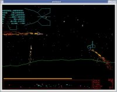
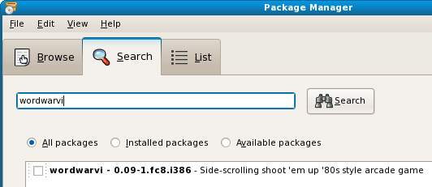
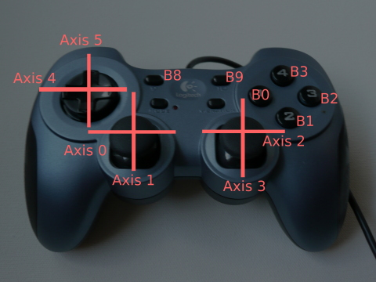
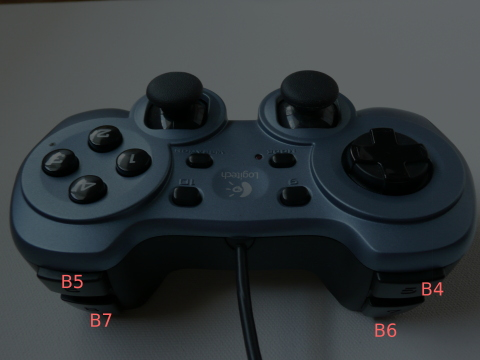
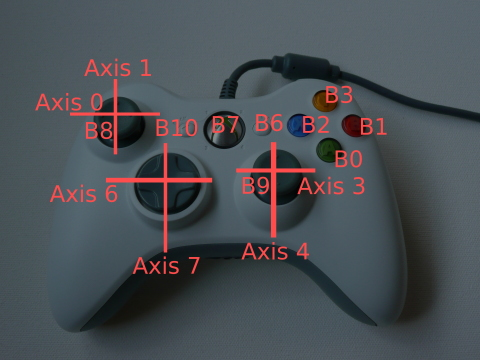
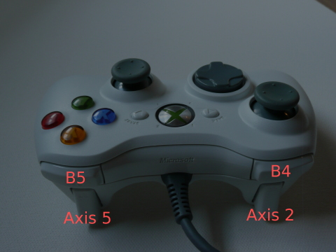
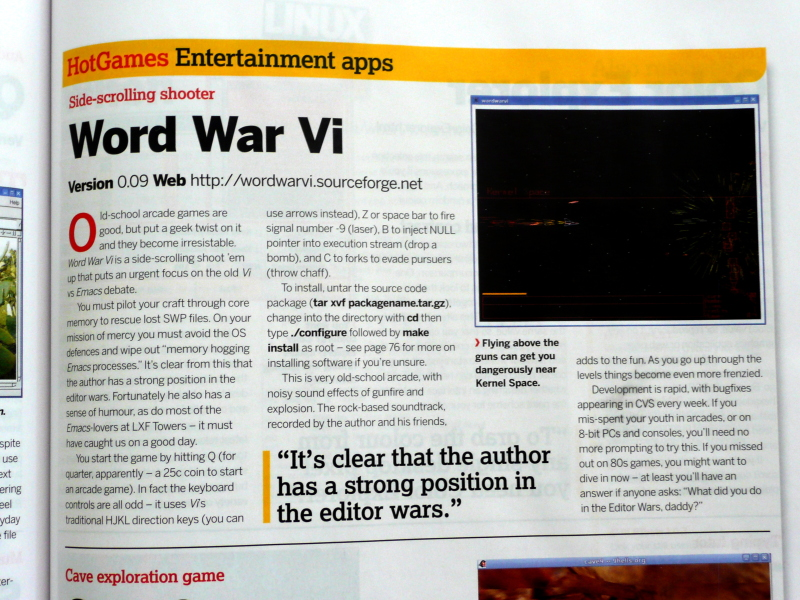

|
Word War vi is your basic side-scrolling shoot 'em up '80s style arcade game. You pilot your "vi"per craft through core memory, rescuing lost .swp files, avoiding OS defenses, and wiping out those memory hogging emacs processes. When all the lost .swp files are rescued, head for the socket which will take you to the next node in the cluster. | |||||||
|
|||||||
|
You might notice some similarity to Defender or Stargate, and perhaps Scramble, or maybe Rescue Raiders, and if you liked those games, you're apt to like this game. There are plenty of differences from those games as well though, some might say it's really "neo-retro," rather than purely retro. It's licensed under the good old GPL v. 2.0, except for the audio files, which are licensed under a couple different Creative Commons licenses (see sounds/Attribution.txt). |
|||||||
|
.
|

Word War vi |

"--bw" mode. |

The "--retrogreen" option. |

The "--brightsparks" option. |
{kind=link}
- Thu Jun 9 04:39:33 UTC 2011, New version 1.00 Not much has changed. The biggest change is to the makefile, to allow cross compilation (thanks to Denis Carikli). This means that Word War vi now runs on the OpenPandora. Also round explosions are now the default.
- Sun Jan 18 12:30:21 CST 2009, New version 0.25 -- here is the change log
- Thu Dec 11 21:00:05 CST 2008, New version 0.24 -- here is the change log
- Sat Nov 29 21:45:01 CST 2008, New version 0.23 -- here is the change log.
- Sun Aug 3 09:15:37 PDT 2008, New version 0.22 -- here is the change log.
- Update Sun Jul 27 11:53:55 PDT 2008, New version 0.21 -- here is the change log.
- Update Sat Jul 19 18:08:41 PDT 2008, New version 0.20 -- here is the change log. -- Main change is better support for Xbox 360 wired USB controller, including support for the RUMBLE EFFECT!
- Update Tue Jul 15 06:12:04 PDT 2008, New version 0.19 -- here is the change log.
- Update: Mon Jul 7 08:47:55 PDT 2008, New version 0.18 -- here is the change log.
- Update: Sun Jun 29 18:06:59 PDT 2008, New version 0.17 -- here is the change log.
- Update: Sun Jun 22 19:45:49 PDT 2008, New version 0.16 -- here is the change log.
- Update: Sun Jun 15 16:03:34 PDT 2008, New version 0.15 -- here is the change log. Biggest change is that now keyboard and joystick controls are now customizable via a ~/.wordwarvi/.exrc configuration file. See the man page for details.
- Update: Sun Jun 8 07:23:11 PDT 2008 , New version 0.14 -- Here is the change log.
Update: Sun Jun 8 7:00:30 PDT 2008, New version 0.13 -- Here is the change log.<-- Don't use this version. It contains a horrible bug which makes cron jobs unshootable.- Update: Sat May 24 14:18:30 PDT 2008, New version 0.12 -- Here is the change log.
- Update: Wed May 21 04:56:11 PDT 2008, New version 0.11 -- Here is the change log.
- Update: Sun May 04, 2008, New version 0.09 -- Here is the change log. The biggest change here is that libsndfile is no longer needed. But, libvorbisfile is now needed. Instead of using oggdec to decode the ogg files to wav files on disk during the build process, the game now decodes the ogg files directly to memory when the game starts. This is good news for makers of live CDs where space might be at a premium.
- Update: Fri May 02, 2008, New version 0.08 -- Here is the change log.
- Update: Tue Apr 29, 2008, New version 0.07 -- Here is the change log.
- Update: Sat Apr 11, 2008, New version 0.06 -- Here is the change log.
- Video of Word War vi from Jun 11, 2008.
- "Destiny Face Down", an insane little intro I added in version 0.10, in which I do my best simultaneous Don Lafontaine and John Williams impressions (neither all that great, I'm afraid.)
- A video of what's current in CVS as of May 6, 2008. I have been meaning to add some kind of "smart bomb" that the player can use when he gets in trouble, but didn't want to use some kind of cliche, like the "smart bomb" that just blows up whatever's on screen. So I had the idea of a kind of "gravity weapon," which I'm not sure I'm going to keep. The video's a little out of focus (sorry). The weapon is sort of like a regular bomb in that it's something which drops from your ship, and falls to the ground, but it's invisible, but has a gravitational field like a black hole -- sucking in everything around it. When what's around it is a bunch of fire -- a kind of tornado of fire forms. If you launch the weapon while travelling upwards, the weapon travels in a nice parabola, dragging a firestorm of debris along with it. Pretty cool looking, but has some weird effects (flinging humanoid carrying cron jobs at warp speed across the terrain). You might think from the video that some fancy OpenGL effects were at work. Not so. There is absolutely nothing but gdk_draw_line() at work here. Not sure I'm going to keep it. Anyway, enjoy the vid (posted 10:30 pm, CDT -- may take awhile for google's video server to make it actually viewable.)
- v. 0.08, current with CVS as of May 2, 2008.
- Here is an older video of v. 0.06, circa Apr 11, 2008.
- Here is an older video from Mar 12, 2008 of word war vi v. 0.04."
- Here is a list of changes between v. 0.03 and 0.04.
- Here's a video that was current as of Feb 16, 2008 (version 0.03, or close to it.) Word war vi video, feb 16, 2008
- Here's an even older video: --> Older video of wordwarvi on youtube.
Downloads -- (Just gimme the wordwarvi-x.xx.tar.gz source tarball please!)
If you're using, say, Fedora Core 8 or 9, you can probably just get wordwarvi by using yum, or the Package Manager (select "Applications", then "Add/Remove Software", then click on "Search", and type "wordwarvi")

It might be a version or two behind what's on sourceforge though.Likewise, if you're using gentoo, there seems to be some activity to get wordwarvi integrated with portage, so you might try the native gentoo way of getting wordwarvi (emerge, I think it's called -- I'm not a gentoo user, as you might have guessed.). Update, Aug 5, 2008: According to this blog posting, Word War vi is "now present in the official Portage tree!" See also, this bug report.
Last, but not least by any stretch, if you just want the source to compile youself, here's the download link: get wordwarvi.tar.gz from sourceforge The current version is 0.22, current with CVS as of Aug 3, 2008.
Or, you can get it from CVS (which I would recommend). Do the following at the shell prompt:
cvs -d:pserver:anonymous@wordwarvi.cvs.sourceforge.net:/cvsroot/wordwarvi login cvs -z3 -d:pserver:anonymous@wordwarvi.cvs.sourceforge.net:/cvsroot/wordwarvi co -P wordwarviI try not to break anything with commits, so usually what's in CVS is better than what's in the tarballs.
cd wordwarvi make
Compiling the game
Compiling is easy, after checking out from CVS as above, just type "make." You'll need the gnome libraries and header files, which you likely already have.
You may need to set a couple environment variables:
export PKG_CONFIG_PATH=/usr/local/lib/pkgconfig export LD_LIBRARY_PATH=/usr/local/lib
(I have that in my ~/.login, so I tend to forget about them.)
You'll also need
libsndfile (not needed since 0.09)
libvorbisfile (needed since 0.09.
It's in the libvorbis rpm on redhat based distros, and the vorbisfile
package for debian based systems, iirc).
Portaudio: You will need the portaudio library. You will need version 19, not version 18., which there's a good chance you don't already have. These are easily compiled and installed via the traditional "./configure", "make", and (as root) "make install" commands. Version 18 is five years old, yet this seems to be what debian and gentoo linux distros have by default. You need portaudio v. 19. portaudio v. 18 will not work.
I'm told that on Ubuntu, you can install the portaudio19-dev package, and that this will solve the portaudio problem without you having to compile it yourself. I noticed that there are some instructions for compiling Word War vi for Ubuntu users here. (Thanks Savvy Admin!)
If you're on a distro which uses portaudio v. 18 by default, and you find you need to compile portaudio19 yourself, you may wish to configure v. 19 to install in /usr/local so as not to conflict, and break default apps which depend on v. 18, and use the LD_LIBRARY_PATH variable to get wordwarvi to find the new version in /usr/local/lib. I'm not going to rewrite wordwarvi to use portaudio v. 18, libao, SDL mixer, pulseaudio, etc., so don't ask. There are a zillion linux audio libs. If I was going to allow using another one besides portaudio, it would probably be JACK. But don't count on even that.
If you want to compile without the audio libraries you can do so by typing:
make WITHAUDIO=noto build without audio support. (Note, the WITHAUDIO=no seems to be broken in v. 0.09, I screwed up the Makefile. This has been fixed in CVS as of May 5, 2008)
The CVS code also needs oggdec (from the vorbis-tools
package) to decode the .ogg files
to .wav files, that is, if audio support is enabled (default).
Not since v. 0.09.
Other packages you might need:
- gtk2-devel
- pango-devel
- atk-devel
- vorbis-tools (for oggdec)
A slackware user writes to tell me that on his system another program ("espeak" in his case) uses a different version of portaudio. He was able to get wordwarvi to peacefully coexist with espeak by configuring the version of portaudio that wordwarvi needs to install in /usr/local/lib (presumably, with "configure --prefix=/usr/local"). Then, presumably, wordwarvi is linked against this via LD_LIBRARY_PATH.
Notes for FreeBSD Users: In v. 0.22, I wrapped the xbox-360 controller rumble code which relies on /usr/include/linux/input.h with "#ifdef __linux__". I don't know if FreeBSD has this support for the xbox-360 controller, but if so, since I doubt __linux__ is defined by gcc on FreeBSD, this code will not get compiled in.
Notes for Mac OS X users: I'm told that this file, /usr/include/linux/input.h was also complained about on the Mac. Maybe with these ifdefs, (as of v. 0.22) somebody can try compiling it and maybe it will work as-is. I am told that the game does compile and run on Mac OS X, but no joystick support. Audio works, I'm told. Also you may have to change <malloc.h> to <malloc/malloc.h> in wordwarvi.c and ogg_to_pcm.c. Robert Daeley has posted a little writeup about building wordwarvi on Mac OS X Leopard on his web site Celsius 1414.
Running the game
Type
./wordwarviin the directory you built it (because it expects the sound files in a "sounds" subdirectory). Or, if you installed, it via "make install", or your linux distribution's native install method, just type "wordwarvi", or select it from whatever place (menu) your distro's installer put it. (e.g. on Fedora, it would be under "Applications->Games").
There are a number of command line options, also settable as defaults via the ~/.wordwarvi/.exrc config file. See the wordwarvi man page for details. If your display resolution is fairly high, which is often the case these days, the game may fail to attain a reasonable frame rate in full screen mode (reasonable = 29.5-ish fps). If you experience this, you might try lowering your display resolution and see if it helps.
Joystick and keyboard controls are also reconfigurable via the ~/.wordwarvi/.exrc config file. See the man page for details.
Bugs
There are some bugs...
- The screensaver will activate during game play. This is because there is no "one" screensaver, there are at least three screensavers in common use: xscreensaver, gnome-screensaver, and kscreensaver, and they provide their own, different ways for a program like wordwarvi to deactivate them. Screw that shit. So, until these guys get their acts together, you have to disable the screensaver yourself, by whatever means your screensaver provides. Complain to the screensaver guys if you don't like it.
It will segfault occasionally in the code which generates buildings. I think it's overflowing a scratch array when recursion happens to get too deep for the arbitrarily chosen "big enough" value I used. Haven't gotten around to fixing that yet.Haven't seen this in ages, fixed it somewhere along the line..- Missiles confused by chaff are doubly confused when the chaff disappears (they end up chasing a random object, usually a spark coming out of your exhaust, which is very nearly the right thing to do, but purely by accident. And, when the missile does hit the spark, you aren't damaged.
Sometimes a falling humanoid will suddenly disappear and reappear instantly on the ground. Don't know why that happens.(Update, May 5, 2008: Fixed in CVS.)- May 4, 2008, I noticed that one of the buttons on the USB gamepad I have will cause a segfault (not a button I normally use). Need to debug that one pronto. Update: May 5 -- so far cannot reproduce this bug.
- At the end of the game, You sometimes see
editor now??? Game Over
which is incorrect. (I think this is fixed now though.) - On higher levels, the game tends to run out of CPU. The game is too aggressive in adjusting parameters to make each level harder than the previous, with no limits, and things get a bit out of control. Needs tuning, and a more sophisticated algorithm. (This is more or less fixed as of 0.14).
- Selecting a non-existent sound device with the --sounddevice option causes a segfault. (Fixed in CVS as of May 5, 2008).
- I've noticed that if firefox is running, and esp. if there are flash things in the pages firefox is showing (e.g. youtube), performance really sucks. I think it may be whatever audio device sharing stuff (pulseaudio?) is going on behind the scenes. In any case, if you notice performance sucking, stop firefox, and see if that makes performance improve.
- Octopi which die by smashing into the ground will corrupt the target list, crashing the game, or making most or all things unshootable. (fixed in CVS as of Jun 19, 2008).
- Some things on the ground (laser turrets) have to be hit at the very base before the ships laser has any effect.
- Sometimes, after entering a high score, the program doesn't transition back to attract mode right away, but plays all the music through before transitioning. Don't know why.
- Entering high scores can be a bit twitchy with a tendency for letters to be entered twice, and no way to backspace.
- I have seen recently (July 5, 2008 or so) an unexplained segfault. Was not able to reproduce it.
- Three users, one on FreeBSD, one gentoo on x86_64,
and one on something else (some kind of linux)
have reported the following bug which occurs the instant you
press 'q' to insert a quarter:
Program received signal SIGABRT, Aborted. [Switching to Thread 0x2ab12bd52240 (LWP 5320)] 0x00002ab12968b3c5 in raise () from /lib/libc.so.6 (gdb) bt #0 0x00002ab12968b3c5 in raise () from /lib/libc.so.6 #1 0x00002ab12968c73e in abort () from /lib/libc.so.6 #2 0x00002ab1296c7acf in ?? () from /lib/libc.so.6 #3 0x00000000004142f2 in start_level () at wordwarvi.c:7943 #4 0x0000000000419c4b in timer_expired () at wordwarvi.c:9383 #5 0x000000000042662b in advance_game (data=
) at wordwarvi.c:9484 #6 0x00002ab1293b822b in ?? () from /usr/lib/libglib-2.0.so.0 #7 0x00002ab1293b7b22 in g_main_context_dispatch () from /usr/lib/libglib-2.0.so.0 #8 0x00002ab1293bada7 in ?? () from /usr/lib/libglib-2.0.so.0 #9 0x00002ab1293bb097 in g_main_loop_run () from /usr/lib/libglib-2.0.so.0 #10 0x00002ab1277331b2 in gtk_main () from /usr/lib/libgtk-x11-2.0.so.0 #11 0x0000000000418630 in main (argc=1, argv=0x7fff842cda88) at wordwarvi.c:12251 The bug can be avoided by commenting out the call to add_buildings() and the code which frees the memory allocated by add_buildings -- at the cost that there are no buildings in the game. So, the bug would appear to be somewhere in add_buildings(), but I have not found it yet. Another hint about this bug, the third user experiencing this found that the bug did not occur if wordwarvi was run as root (not recommended as a solution, but an interesting clue.) Bug still exists as of April, 2009. Any help fixing this properly would be appreciated as I have no clue what's going on, and cannot reproduce the bug myself. Notice also that it's getting SIGABRT, which is unusual.
- I'm sure there are others...
Acknowledgements
I would like to thank the following people for helping out with various aspects of this project:
- Marty Kiel, for providing awesome synth and drum tracks to go along with my guitar riffing.
- Hans de Goede for packaging things up into an RPM for Fedora, and for testing, and for a few bug fix patches.
- Nick Thomas specifically, and all the other guys on the Linux Audio Developers mailing list who helped me to get sound working (and who've helped me on other projects Also thanks to the guys that wrote libsndfile and portaudio (Actually, I don't use libsndfile anymore, though it was handy for awhile.)
- Big thanks to the guys as xiph.org, esp. Michael Smith, whose code for decoding ogg files I found immensely helpful, and from which I found it well worth borrowing heavily.
- The following freesound users for various audio samples (see Attribution.txt) (Actually, those audio files are no longer used due to various licensing problems, but thanks to those folks none the less.)
- And, of course, sourceforge.net, for hosting this stuff.
History
I started working on this game on Apr 23, 2007, weekends and nights, just out of boredom. It bears some resemblance to a DOS game I wrote in Turbo Pascal more than 10 years ago, which I've since lost.) I put it on Sourceforge May 7, 2007, about 2 weeks later, so progress was pretty fast. I tried to preserve the commits as they happened, so you can see the program as it evolved from essentially a GTK "hello world" example program to what it is now. I'm just putting this here in case some kid comes along and wants to learn from it. It's not the best programming in the world, but it does show fairly small incremental changes from very very simple beginnings to what is here now. So, feel free to browse through the CVS history: and check out older versions of the program and compile and run them and tinker with them.
I made a few short videos showing a progression of older versions of the program leading up to where it is now (Feb 2, 2008).
Part 1
Part 2
Part 3
Note: this information is current as of Jul 19, 2008 and wordwarvi-0.20 or better.
I've used a couple of different game pads with this game.
The rumble effects only work with the XBox 360 controller and you must have linux kernel 2.6.26 or better. The default input device is /dev/input/event5. /dev/input/event0 through event4 are usually your mouse. If /dev/input/enent5 doesn't work, and you have other device nodes under /dev/input, like /dev/input/event6, event7, etc., you can try those with the --rumbledevice option.The permissions on the /dev/input/event* device nodes will be such that only root can use them. I'll leave it up to you how you want to solve that, whether by running the game as root (not such a hot idea) chmod'ding or chown'ing the device nodes, or something else.
You can customize the gamepad controls via the ~/.wordwarvi/.exrc file. (See the man page for details about the syntax.)
Here are some pictures to help you know what the button and axis numbers are:

Above: Logitech Dual Action Rumble, top view.

Above: Logitech Dual Action Rumble, rear view.

Above: Microsoft Xbox 360 controller, top view.

Above: Microsoft Xbox 360 controller, rear view.
-
The August 2008 issue of Linux Format magazine contains a short review of Word War vi 0.09:

The above magazine (c) Copyright 2008 Future Publishing reproduced here with permission.
When I showed the above review to a non-computer-nerd friend, (and after a lengthy explanation of what "vi" was, and what "emacs" was, and what the whole "editor war" thing was about) he read the review, and then said, "Ha! I love how they just toss 'vi' and 'emacs' out like everyone knows what those are, but then they feel they have to explain what a 'quarter' is."
I told him, "Yeah, well, they're from the UK. They don't know what the f*#% a quarter is. They've got the metric system over there."
Just FYI, their insturctions to use ./configure aren't quite right -- the game hasn't ever been autoconfiscated -- but I certainly am not going complain about what is a pretty good review. :)
- The August 2008 issue of Linux User, has a review (in German) of Word War vi 0.14. They award the game 4 out of 5 Penguins. ( Here is Google's English to German translation of Linux User's web site for the August issue.). If Google's translation is to be trusted, the review sums things up in this way: "Word War Vi is a game in the classic arcade style, in terms of gameplay easily keep up with modern games."
- Here is the google translation of a review by Michael Astapchik. Here is the original (in Russian, I think). I love this review, even though I can't read Russion. I love the crazy way that Google translates it. I love the words that it can't translate, yet which are still sort of recognizable, for instance, it mentions "Kazualnye games," which I can only assume are "casual games." And "geymeru" is presumably, "gamer." Other words are indecipherable to me, but this makes the whole review feel like an only partially decoded alien artifact, while at the same time it has a comfortable familiarity. Thanks Michael Astapchik, you made my day!
Icons
(These icons are in CVS, in both png and xcf form, so you don't need to laboriously grab them with your browser. They're just here for easy viewing.)
|
128 x 128 |
64 x 64 |
48 x 48 |
32 x 32 |
22 x 22 |
16 x 16 |
Contact information If you want to send me flames or bug reports, or suggestions, or whatever, you can reach me at:
Note: Obviously, emacs is a fine editor and this is all very tongue in cheek, so don't be getting all bent out of shape because you like emacs better than vi, mmm-kay?
(as if there were any doubt.)